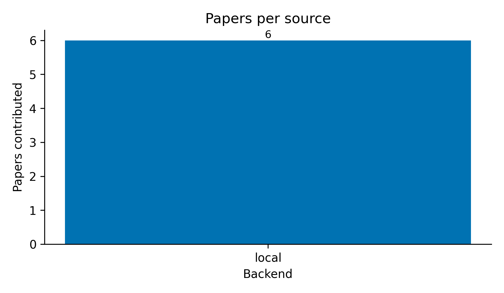

![Publication-year histogram of the deduplicated paper roster. One bin per year (no smoothing); the x-axis spans the observed [min(year), max(year)] from result.papers. Papers with year is None are dropped; the y-axis is per-year paper count. Generated by src/figures.py::plot_year_histogram.](../figures/year_histogram.png)
[min(year), max(year)] from
result.papers. Papers with year is None are
dropped; the y-axis is per-year paper count. Generated by
src/figures.py::plot_year_histogram.Two distinct workflows run on top of
infrastructure/search/literature and
infrastructure/reference/citation:
scripts/run_search_pipeline.py →
src/pipeline.py::run_literature_pipeline) — single
SearchQuery. Four pure-orchestration stages with no LLM
dependency: (1) search via LiteratureClient, (2) enrichment
via AbstractFetcher and (optional)
FulltextFetcher, (3) collision-free citation-key generation
in _build_citation_keys, (4) writing
output/corpus.json + manuscript/references.bib
+ output/enrichment_log.json. The orchestrator script then
optionally calls src/synthesis.py for per-paper and corpus
LLM synthesis and src/report.py for the final reading
report.scripts/run_deep_search.py →
src/deep_search.py::run_deep_search) — multi-keyword
fan-out: each keyword runs its own SearchQuery capped at
max_results_per_keyword (100 by default), every paper is
fully enriched (abstract + PDF fulltext when available), and an
LLM-driven multi-section deep summary (CONTRIBUTION / METHOD / EVIDENCE
/ LIMITATIONS / CONNECTIONS / SIGNIFICANCE / TAGS) is written for each
paper as a standalone markdown reading note. Output lands under
output/deep_search/<keyword_slug>/ plus aggregate
aggregate.json, aggregate_report.md, and a
unified, deduplicated manuscript/references_deep.bib with
collision-free citation keys.The standard pipeline is described first in this section; the deep-search workflow is documented in [@sec:deep_search]. Diagnostic figures for the latest pipeline run appear at the end of this section.
The search stage is intentionally faithful to the standard literature-search pattern documented in foundational optimisation textbooks [boyd2004convex; nocedal2006numerical] — a deterministic query, capped result count, and explicit failure isolation between sources — so reviewers familiar with those references can reason about the workflow without learning new abstractions.
A SearchQuery is constructed from
config.search:
SearchQuery(
text=config.search.query,
max_results=config.search.max_results,
year_min=config.search.year_min,
year_max=config.search.year_max,
)A LiteratureClient is constructed with the configured
backends. Each backend produces a normalised Paper record;
the aggregator deduplicates by DOI → arXiv id → normalised (title,
year), keeping the highest-scored copy and filling missing fields from
the loser.
Per-backend errors are recorded into SearchResult.errors
rather than raised. A network outage in one backend never breaks the
workflow; partial coverage is reported by the final stage.
SearchCache writes one JSON file per query, named by a
16-character SHA-256 prefix of the canonical query identity. Identical
queries (modulo whitespace and case) share a cache entry. Cache files
are pretty-printed JSON, version-control-friendly, and contain a
_cached_at timestamp for optional TTL enforcement.
Two fetchers populate fields the search backends did not supply:
AbstractFetcher — currently fetches arXiv abstracts via
the export API, writes them to <safe_id>.txt under
the configured cache directory, and re-uses them on subsequent
runs.FulltextFetcher — downloads PDFs (arXiv URL,
paper.pdf_url, or a caller-supplied override), writes the
bytes verbatim to <safe_id>.pdf, and extracts text
via pypdf to <safe_id>.txt. Without
pypdf the PDF is still cached, and the fetcher returns
status="error" with an informative message; the rest of the
pipeline continues.Both fetchers stamp paper.abstract /
paper.fulltext in place, so downstream stages see enriched
records without re-loading.
For every paper, paper_to_bibentry() produces a
BibEntry whose:
<author><year><title-word> convention
with stop-word filtering and unicode folding;venue_type (journal →
@article, conference → @inproceedings, book →
@book, preprint → @article, etc.);references.bib: title, author, journal/booktitle, year,
volume, number, pages, publisher, edition, isbn, doi, url, abstract,
keywords.A BibDatabase collects these entries and
write_bibfile renders them in the project’s house format:
2-space indent, trailing-comma rule, pages={N--M}, verbatim
DOIs/years, bare unicode.
Two LLM passes produce the reading report (see
src/synthesis.py):
build_paper_block(paper, citation_key, max_fulltext=4000)
renders the paper as a markdown block; synthesise_per_paper
formats PROMPT_PER_PAPER and calls the injected
llm callable. The prompt requests five sections:
CONTRIBUTION, METHOD, EVIDENCE, LIMITATION, TAGS, plus a citation-key
reference.build_corpus_block
concatenates every paper into a single citation-keyed block;
synthesise_corpus formats PROMPT_CORPUS, which
asks for 3–7 thematic clusters, methodological agreements /
disagreements (≥ 2 papers each), and three open questions that the
corpus does not answer.Both functions return a
SynthesisResult(kind, prompt, text, paper_id) record so the
prompt is recoverable for reproducibility. The synthesis layer takes a
callable llm: (str) -> str so tests pass a deterministic
local function (no Ollama dependency) and runtime callers pass a thin
adapter around infrastructure.llm.LLMClient. Determinism in
production runs is enforced by
OllamaClientConfig(seed=42, temperature=0.0).
The deep-search workflow uses a richer prompt
(src/deep_search.py::DEEP_PROMPT) with seven sections
(CONTRIBUTION / METHOD / EVIDENCE / LIMITATIONS / CONNECTIONS /
SIGNIFICANCE / TAGS) and a much larger max_fulltext budget
(400 k chars by default).
src/report.py::write_reading_report assembles a markdown
file with:
Citation keys appear in [brackets] so a downstream tool
— for example a Pandoc filter or a manual search — can resolve them
against the auto-generated references.bib.
scripts/y_generate_search_figures.py (a thin
orchestrator over src/figures.py) writes three diagnostic
plots into ../figures/ from
output/search/results.json. Each figure uses Matplotlib’s
Agg backend so the pipeline runs headlessly in CI; the
colour palette is colourblind-safe (Wong, Nature Methods
2011).
[@fig:papers_per_source]
reports the per-backend contribution counts before deduplication,
surfacing which sources actually returned coverage for the configured
query. The bar values are read directly from
SearchResult.per_source_counts (set by
LiteratureClient before the DOI / arXiv-id / title
merge step), so a backend that returned five papers all duplicating
arXiv hits still scores five here.

[@fig:year_histogram] shows the
publication-year distribution after the merge step (one bar per
unique paper, not per backend hit) — useful for spotting backend
coverage gaps in older / newer literature. Papers with no
year field are dropped silently from the histogram (they
remain in the corpus).
[@fig:score_distribution]
shows the per-paper relevance scores returned by the backends, ranked
descending. Papers from backends without an explicit ranking signal
(e.g. LocalBackend, the offline default) carry
Paper.score = 0.0; their bars therefore have zero length
but still appear as ticks on the y-axis so the reader can see how many
unranked papers exist.